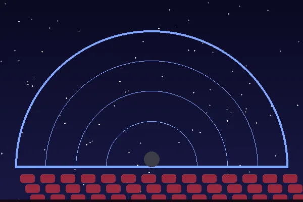

Constelaciones
Doce constelaciones con sus estrellas más famosas y un dato curioso de cada una.
VerPlanetario Estrella Polar
✦ ✧ ✦
Siéntate, mira hacia arriba y deja que se apaguen las luces. Descubre las constelaciones y vive una noche entre estrellas sin salir de la ciudad.
Empezar la sesiónUna constelación es un grupo de estrellas que, vistas desde la Tierra, parecen formar un dibujo. Las estrellas de una misma constelación pueden estar muy lejos unas de otras: solo parecen juntas desde nuestro punto de vista.
Hoy en día hay 88 constelaciones oficiales, aprobadas por la Unión Astronómica Internacional.

La sala principal es una cúpula de 15 metros de diámetro con 120 butacas reclinables. En el centro está el proyector, que dibuja más de 9000 estrellas en el techo, las mismas que veríamos en una noche perfecta lejos de la ciudad.
Durante la sesión, un guía va explicando en directo lo que aparece en el cielo: las constelaciones, los planetas que se ven esa noche y las historias que las acompañan.